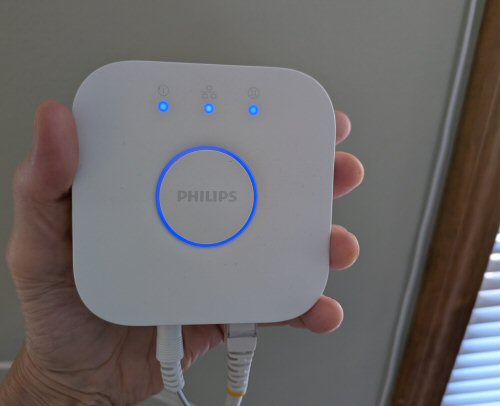

The Autopsy Report · Device #030
The Hue Bridge, Second Generation
The square little box that made light bulbs answer to Siri — and the reason every Hue bulb you own still phones home through it. Public-records edition: we haven't opened one yet, and the silicon is still unverified.
What is this thing?
The Philips Hue Bridge 2.0 is the hub of the Hue lighting system: a small square box that plugs into your router over Ethernet and speaks Zigbee to your Hue bulbs, translating between your phone (or Siri, or Alexa) and the lights. Without it, the bulbs are just bulbs. The 2.0 replaced the original round bridge with a square one "like the Apple TV" and added Apple HomeKit support — which the old bridge couldn't do, for hardware reasons. MacRumors TechCrunch
The model number is 3241312018, filed with the FCC under ID O3M324131201801 — note the first character is the letter O, not a zero. FCC filing
Whose box is this?
Not ours — not yet. No unit of this device is on our bench. We haven't bought one, opened one, photographed one's insides, or listened to one boot. Everything on this page comes from public records: launch coverage, the product manual, an archived OpenWrt forum thread, and a freely-licensed stock photo credited below. When a unit lands on our bench, this report gets a second edition with our own photos, measurements, and boot log.
A short history
- 2012Philips launches Hue with the original round bridge — the product that makes smart lighting mainstream. MacRumors
- October 5, 2015Philips announces the Hue Bridge 2.0: square design, HomeKit support, $60 standalone (existing owners get a $20 discount). On sale in the US and Canada October 6. MacRumors TechCrunch
- 2016Community hardware hackers document the board on the OpenWrt forums — including the existence of a serial console, discussed below. Archived OpenWrt forum thread
- 2020Signify ends software updates and online services for the original round v1 bridge — the square v2 keeps going. Engadget
The outside
A small white square with rounded corners: Ethernet and power on the back, three status LEDs on top, a large round link button in the center for pairing new bulbs, and a small reset button on the rear. It can lie flat or hang on a wall. Product specification (manuals.plus)

The board
We haven't held this board ourselves, and the public record here is thinner than we'd like. What's documented in public sources: the bridge is a Linux-based device with an Ethernet port for the home network and a Zigbee radio for the bulbs, plus the link button, reset button, and status LEDs described above. An archived OpenWrt forum thread from the community's hardware exploration documents the board's layout and notes the existence of a serial (UART) console on the board. Product specification (manuals.plus) Archived OpenWrt forum thread
So we say it plainly: no chip table appears on this page. No public source we've reviewed names the exact application processor, Zigbee radio, or memory on the v2 board with board-level evidence, so none are named here. The chip table goes in when a unit reaches our bench.
A note on that OpenWrt thread: it lives in the archive because the community explored this hardware deeply — including techniques we will never document here. We cite it only for the existence of the serial console, which is a hardware fact. How to use such a console against a device is not something BareBoard publishes, for this or any hardware.
Under the microscope: the chips
There is no chip table on this page — and that's deliberate. What the public record does establish about the v2 bridge hardware:
- FCC ID O3M324131201801 (letter O, not zero), model 3241312018, grantee Philips (China) Investment Co., Ltd. FCC filing
- Ethernet + Zigbee architecture — wired to the router, wireless to the bulbs — with a Linux-derived software stack. Product specification (manuals.plus)
- A serial (UART) console exists on the board, per community hardware documentation. Existence and location only — no procedures, per our policy. Archived OpenWrt forum thread
The moment exact-model silicon evidence exists, the chip table goes in with sources attached.
The government's file on this box
The v2 bridge's FCC filing sits under FCC ID: O3M324131201801. An honest note on method: the FCC's mirror page for this ID blocked our automated lookup, and the internal-photo exhibit for this filing isn't directly verifiable from public mirrors — so we treat the internal photos as unverified and claim nothing about the board from the filing. The ID, model number, and grantee above are the documented public record. FCC filing
Listening to it boot
We haven't — there is no unit on our bench, so there is no boot log, no serial capture, nothing. That section gets written the day one arrives.
Our rule for debug ports, whenever we do meet this hardware: we listen, we don't knock. Community records say a serial console exists on this board; if our future unit confirms it, we'll connect a read-only listener and record what the device volunteers about its own startup — and publish that. We won't use it to break in, dump firmware, bypass authentication, or defeat anything. Existence is a hardware fact; exploitation is not our beat.
What we found
HomeKit was a hardware feature, not a software update. The whole reason the v2 bridge exists is that the v1 bridge physically couldn't do HomeKit — Philips said so outright, and discounted the new bridge for existing owners. When a company tells you the old hardware can't learn the new trick, believe the silicon, not the marketing. TechCrunch
The v1 bridge's 2020 end-of-support is the quiet warning on this page. When Signify cut software updates and online services for the original round bridge, v1 owners lost remote access and voice-assistant control — a reminder that a cloud-tethered hub is a subscription you paid for once. The v2 survived that cull, which is why it's the one worth documenting. Engadget
What we didn't do
- This device is not on our bench. We have not disassembled one.
- We captured no boot log and ran no bench tests.
- We have not touched, extracted, modified, or shared this device's firmware.
- We have not probed any debug interface on it — and we publish no bypass, extraction, or credential techniques for this or any device.
- We did not name chip identities the public record doesn't support.
- The product photo above is a freely-licensed stock image, credited in its caption — not our photography.
By the numbers
- Model: Philips Hue Bridge 2.0 (2015, square model), 3241312018
- FCC ID: O3M324131201801 (first character is the letter O)
- Architecture: Ethernet uplink + Zigbee to bulbs; Linux-derived stack
- Controls: Center link button, rear reset button, 3 status LEDs
- Launched: October 5, 2015, at $60; on sale October 6 ($20 discount for v1 owners)
- Exact silicon: Unverified in public sources — awaits the bench
Words to know
Every term this page uses, in plain English. No prior knowledge required.
- Hub / bridge
- A box that translates between your home network and gadgets that speak a different wireless language — here, Zigbee.
- Zigbee
- A low-power wireless standard built for smart-home gadgets — light bulbs, sensors, locks — that sip battery and form mesh networks.
- HomeKit
- Apple's smart-home framework — the reason this bridge lets Siri control your lights.
- UART / serial console
- A simple port that lets you watch a device narrate its own startup, line by line.
- Boot log
- The text a device prints as it starts up. Engineers read it to see what's inside without opening anything.
- Firmware
- The software baked into the device — the part that runs before anything else.
- FCC
- The Federal Communications Commission — the U.S. agency that regulates anything that transmits radio. Every wireless gadget sold here has to pass its tests first.
- FCC ID
- The ID the FCC assigns to each approved wireless product. The first few characters are the company's grantee code; the rest is the maker's model code. Punch it into fccid.io and the whole public filing comes up.
Sources & confidence
- Launch details (date, price, availability, HomeKit reasoning): contemporaneous launch coverage. High confidence.
- Physical description (ports, buttons, LEDs): product specification document. High confidence.
- UART existence: archived community hardware thread. Medium confidence — existence only, no procedures published.
- FCC ID, model, grantee: the public filing record. High confidence. Internal-photo exhibit: unverified — mirror pages blocked lookup.
- Exact chip markings: unverified — no public source reviewed names them, so none are named here. This is the page's known gap.
- Anything not listed here is unknown until the bench says otherwise. We'll say so, out loud, when that's the case.
Public-records edition — thin sources. This device is not on our bench. No disassembly, no boot log, no bench testing, and no firmware touched, extracted, modified, or shared. The stock photo is freely licensed and credited in its caption.
Legal note. BareBoard is an educational project. Everything on this page is assembled from public records and freely-licensed photography credited in its caption. We don't publish, host, or distribute firmware, keys, passwords, or credentials. Product names and trademarks belong to their respective owners and appear here only to identify the hardware. If you believe anything here infringes your rights, contact us and we'll address it promptly.